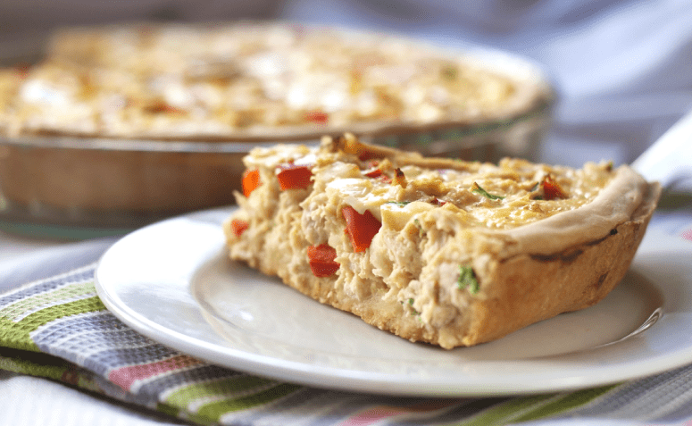
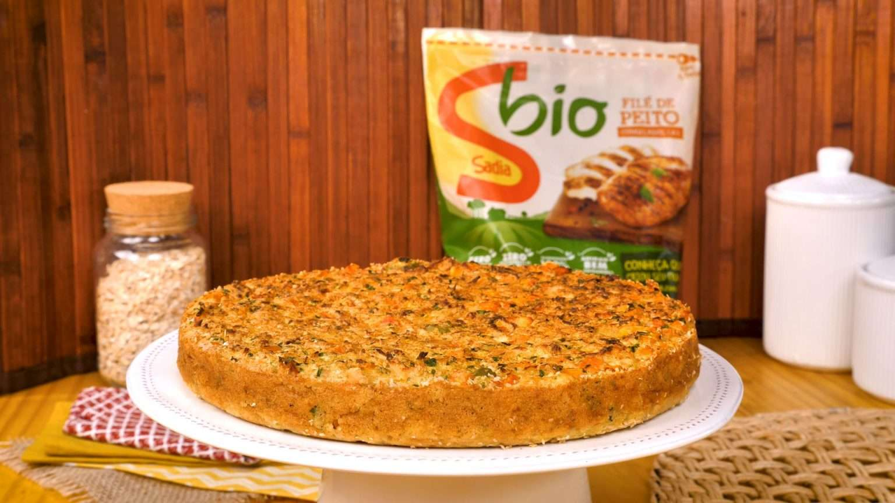
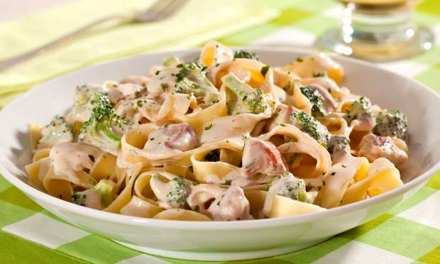

Jantar Fit
Está de dieta ou apenas tentando levar uma vida mais saudável e quer aprender a preparar receitas para jantar fitness bem gostosas e diferentes? Então, dá só uma olhada nessa lista que separamos para você com opções deliciosas de refeições. Tem entradas, pratos principais, tortas e até sobremesas! Escolha a sua versão preferida e corra para a cozinha testar
Receita de Torta de Frango com Queijo Coalho

Ingredientes para Torta de Frango com Queijo Coalho Massa
Massa
- 300 g de purê de batatas;
- 250 g de farinha de trigo;
- 150 ml de óleo de soja;
- 3 ovos;
Recheio
- 200 g de queijo coalho picado;
- 200 g de peito de frango desfiado;
- 1/2 cebola picada;
- 1/2 pimentão verde picado;
- 1/2 pimentão vermelho picado;
- 1/2 xícara de azeitonas picadas;
- sal a gosto;
- orégano para polvilhar;
Como preparar a Torta de Frango com Queijo Coalho
Massa
- Prepare um purê de batatas com consistência firme.
- Acrescente a farinha de trigo e logo em seguida o óleo e os ovos inteiros.
Recheio
- Junte à massa todos os ingredientes do recheio, unte uma forma retangular ou de sua preferência com bastante óleo, despeje a massa, polvilhe orégano e coloque no forno preaquecido a 250ºC por aproximadamente 35 a 40 minutos.
Torta de frango com farelo de aveia

Ingredientes para Torta de frango com farelo de aveia
- 3 ovos;
- 1 xícara e 1/2 de chá de oatbran (farelo de aveia);
- 1/2 cebola picada;
- 1/2 xícara de chá de óleo;
- 1 peito de frango cozido, temperado e desfiado;
- 2 cenouras médias bem picadinhas;
- 2 dentes de alho passados no espremedor
- 2 tomates sem peles e sem sementes picados;
- 1/2 xícara de chá de salsinha picada
- 10 azeitonas verdes picadas
- 1 colher de sopa de fermento em pó
Como preparar Torta de frango com farelo de aveia
- Leve a cenoura picada ao microondas e dê uma pré-cozida.
- Bata no liquidificador: os ovos, o leite, o óleo e o oatbran (farelo de aveia).
- Passe para uma tigela e junte os demais ingredientes, sendo que o fermento deve ser o último, misture bem.
- Coloque em uma fôrma pequena untada e enfarinhada com o próprio oatbran.
- Leve ao forno médio pré-aquecido por aproximadamente 30 minutos.
Escondidinho de frango com batata doce fit
Ingredientes para Escondidinho de frango com batata doce fit
- 600 gramas de couve-flor;
- 100 gramas de ricota picada;
- 4 dentes de alho picados;
- 1 colher de chá de açafrão;
- Pimenta caiena a gosto;
- 2 colheres de sopa de azeite de oliva;
- 1 1/2 cebola ralada.
Como preparar Escondidinho de frango com batata doce fit
Pique o alho, rale a cebola, separe os temperos. Acenda o forno a 200 graus. Então tempere e grelhe o frango e depois desfie. Reserve. Cozinhe a couve flor no vapor até ficar macia, deixe escorrer numa peneira. Refogue a cebola, o alho, a pimenta e o açafrão no azeite. Corte a couve-flor em pedacinhos, junte o requeijão e processe, acrescente o refogado de cebola, processe novamente. Reserve.
Unte um refratário com creme vegetal e espalhe metade da mistura da couve flor, por cima espalhe o recheio de frango e finalize com a mistura de couve flor e finalize com o frango. Leve ao forno por 25 minutos ou até garinar. Deixe descansar e sirva!
Risoto de arroz integral e frango desfiadocondidinho de frango com batata-doce/h2>
Ingredientes para Risoto de arroz integral e frango desfiado
- 280 g de Arroz Integral Vapza;
- 200 g de Peito de Frango Desfiado Vapza;
- 4 colheres (sopa) de requeijão light;
- 50 ml de água;
- 1/2 cebola picada;
- 1 dente de alho picado;
- 1/2 pimentão vermelho picado
- 1/2 cenoura ralada;
- 1/2 colher (chá) de caldo de galinha
- 1 colher (sopa) de azeite de oliva
- Cheiro verde a gosto
- Sal a gosto
Como preparar Risoto de arroz integral e frango desfiado
- Em uma panela, adicione azeite e refogue a cebola e o alho, em seguida adicione o pimentão, a cenoura, o frango e o caldo de galinha.
- Deixe refogar mais um pouco e coloque a água.
- Para o arroz integral, faça alguns furos no pacote com um garfo e comprima suavemente os grãos até que fiquem soltos.
- Aqueça no microondas por dois minutos.
- Abra o pacote e despeje o conteúdo junto ao refogado e em seguida adicione o requeijão e mexa bem.
- Finalize com o cheiro verde e sirva.
Macarrão ao creme de frango e brócolis Fitness

Ingredientes para Macarrão ao creme de frango e brócolis Fitness
- 1 pacote de macarrão fettuccine;
- 1 maço de brócolis fresco lavado;
- 4 colheres (sopa) de azeite de oliva;
- 1 dente de alho picado;
- 1 kg de peito de frango desossado, sem pele, cortado em cubos pequenos;
- 1 xícara (chá) de leite;
- 1 lata de creme de leite.
- 1 pote de cream cheese
- 100 gramas de queijo ralado
Como preparar Macarrão ao creme de frango e brócolis Fitness
Cozinhe o macarrão conforme instruções na embalagem.
Nos últimos 2 minutos de cozimento, acrescente o brócolis cortado em buquês pequenos.
Em uma panela, aqueça o azeite, doure o alho e refogue o frango até dourar.
Acrescente o leite, creme de leite, o cream cheese em colheradas, o queijo ralado, o sal e a pimenta e deixe no fogo por 5 minutos.
Escorra o macarrão com os brócolis e misture no molho.
Salpique a salsa e sirva em seguida.